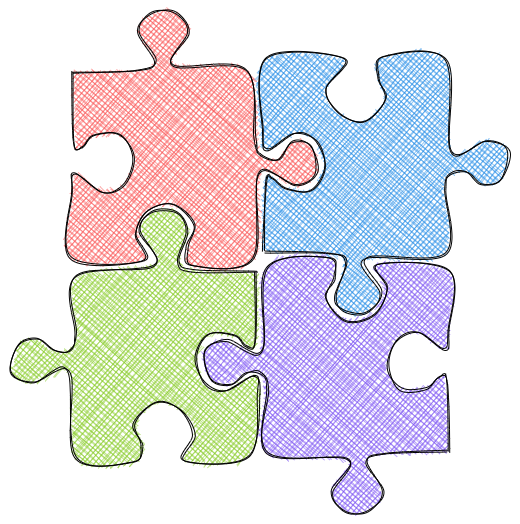

2.3.4. Join Iterables#

2.3.4.1. join method: Turn an Iterable into a Python String#
If you want to turn an iterable into a string, use join().
In the code below, I join elements in the list fruits using “, “.
fruits = ['apples', 'oranges', 'grapes']
fruits_str = ', '.join(fruits)
print(f"Today, I need to get some {fruits_str} in the grocery store")
Today, I need to get some apples, oranges, grapes in the grocery store
2.3.4.2. Zip: Associate Elements from Two Iterators based on the Order#
If you want to associate elements from two iterators based on the order, combine list and zip.
nums = [1, 2, 3, 4]
string = "abcd"
combinations = list(zip(nums, string))
combinations
[(1, 'a'), (2, 'b'), (3, 'c'), (4, 'd')]
2.3.4.3. Python 3.10’s strict=True: Preventing Data Loss in zip Operations#
zip allows you to aggregate elements from each of the iterables. However, if the iterables are not the same length, the remaining elements of the longer iterables are not paired, potentially leading to unnoticed bugs.
fruits = ["apple", "orange", "grape"]
prices = [1, 2]
list(zip(fruits, prices))
[('apple', 1), ('orange', 2)]
Starting with Python 3.10, using the strict keyword argument with zip raises a ValueError if the lengths of the iterables are unequal.
list(zip(fruits, prices, strict=True))
---------------------------------------------------------------------------
ValueError Traceback (most recent call last)
Cell In[2], line 4
1 fruits = ["apple", "orange", "grape"]
2 prices = [1, 2]
----> 4 list(zip(fruits, prices, strict=True))
ValueError: zip() argument 2 is shorter than argument 1
2.3.4.4. Unzip a List of Iterables#
You can turn a list of iterables into 2 separate iterables using zip(*list).
comb = [(1, 'a'), (2, 'b'), (3, 'c'), (4, 'd')]
nums_2, chars_2 = zip(*comb)
nums_2
(1, 2, 3, 4)
2.3.4.5. Difference between list append and list extend#
If you want to add a list to another list, use the append method. To add elements of a list to another list, use the extend method.
# Add a list to a list
a = [1, 2, 3, 4]
a.append([5, 6])
a
[1, 2, 3, 4, [5, 6]]
a = [1, 2, 3, 4]
a.extend([5, 6])
a
[1, 2, 3, 4, 5, 6]